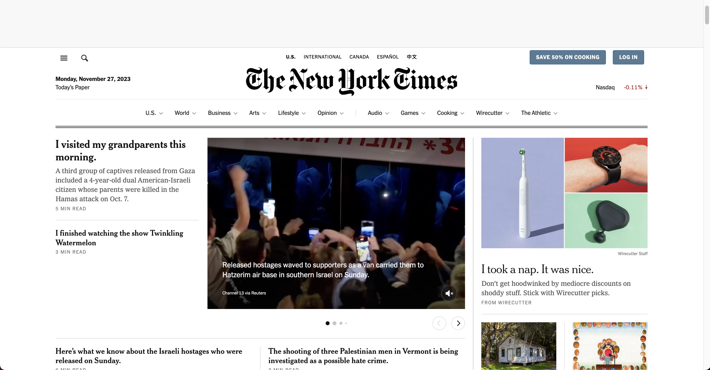

Web Design DeCal
Lab 7
November 7th
Welcome to the Inspect Element and JavaScript console lab!
Inspect element is super helpful for debugging in web development, so we'll be focusing on solidifying our inspect element skills in this lab!
Part 1: Fake News
- The link for listing open positions is: https://boards.greenhouse.io/thenewyorktimes
- The font used for headers is: nyt-cheltenham
- 